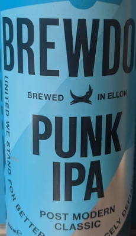
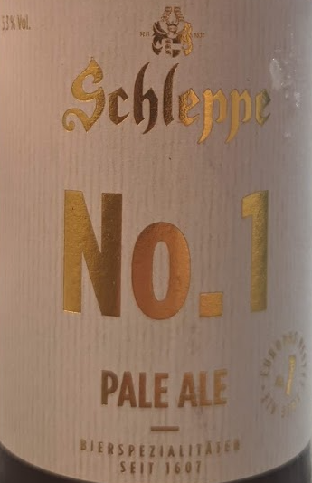
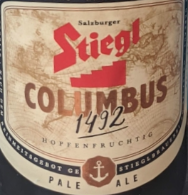
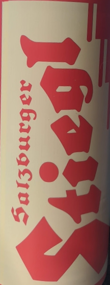

Beer collection
Austria
5/5 Brewdog - Punk IPA
Good one.
4/5 Schleppe - No. 1 Pale Ale
Good fresh hop, not too bitter, with a pungent after taste. This one is nice as a starter, but not for continuous drinking.
3/5 Stiegl - Columbus
Good value/quality ratio. Pale ale with enjoyable taste, not too sharp hop flavor.
1/5 Stiegl - Goldbrau
Yellow and refreshing, not my particular kind of beer but can be a good choice on hot days.
Definitions
Top-fermented
Room temperature, the yeast rises to the top on a open kettle.
Bavaria beer
The top-fermented with wheat malt. This is called Wheat beer (Weizen). Can be filtered or unfiltered.
Bottom fermented, the Helle or Lager.
Historically, this beer was produced during the winter. It was slow and cold process.
"Marzen" comes from the fact the the beer was brewed in march and served during the year. It lasted longer because of "higher original gravity".
Bottom-fermented
Colder temperatures make the yeast go the the bottom.